Custom 3D-printed helical planetary gearbox sized via system dynamics calculations, paired with a from-scratch motor controller circuit - potentiometer speed control, direction switch, voltage readout - and a bracket designed to mate with existing tapped holes. No new drilling.
Off-the-shelf actuators for converting a manual standing desk are expensive and overkill. The real engineering challenge - designing a compact, 3D-printable gearbox with enough reduction to drive the lead screw at usable speed - was interesting enough to build from scratch.
The project crossed three disciplines: mechanical (gear design, system dynamics, bracket geometry), electrical (motor controller with user controls), and validation (load testing the printed gear teeth). Exactly the kind of cross-functional integration that shows up in real product work.
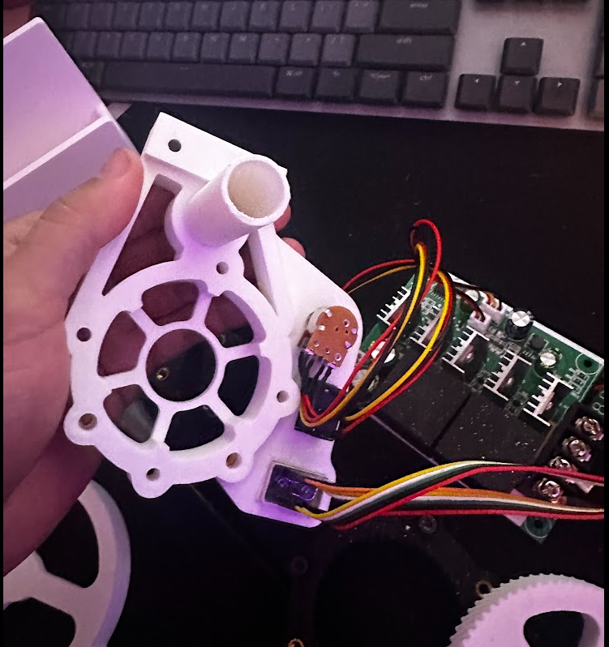
Planetary configuration distributes load across three planet gears simultaneously - significantly more compact than an equivalent spur gear train at the same reduction. Helical tooth profile adds gradual engagement, reducing impact load per tooth (important for PLA).
Gear ratios sized with closed-form planetary equations against target motor speed and desk lead screw pitch. System dynamics calculations validated torque requirements across the full travel range, accounting for desk weight, lead screw friction, and dynamic start/stop loads.
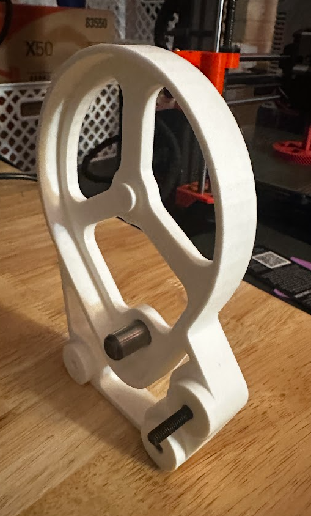
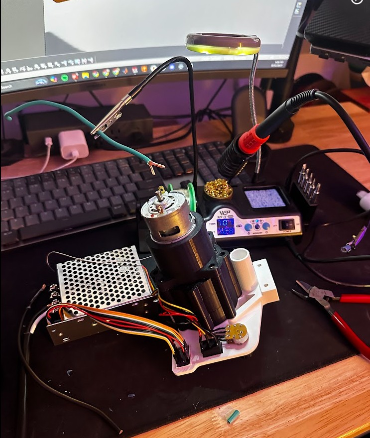
Three load paths, gradual tooth engagement, lower noise, compact form factor. Trade-off: helical teeth add axial thrust - accounted for in bearing selection.
Load tested under representative desk loads. Characterized failure modes (tooth stripping at overload, bearing wear over cycles) and updated geometry accordingly.
Potentiometer for varying motor speed, switch for direction (up/down), and a voltage readout showing actual voltage delivered to the motor. Intentionally transparent - you can see real-time how loaded the system is via voltage drop, useful for diagnostics and tuning the speed setpoint.
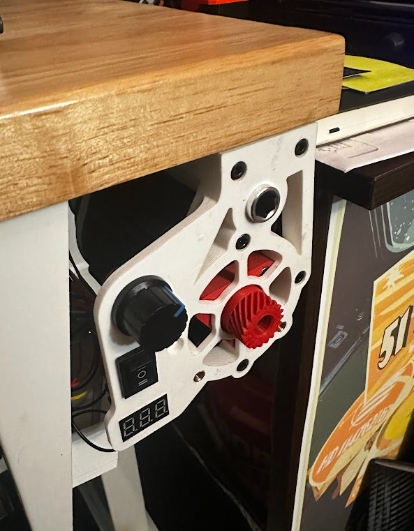
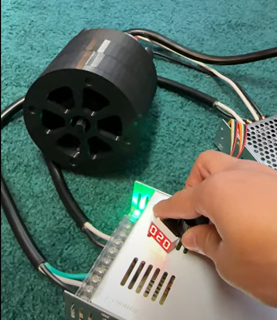
Designed to mate with pre-existing tapped holes on the desk underside - no new drilling, no irreversible modifications. Constraint-driven design: respect what's already there.
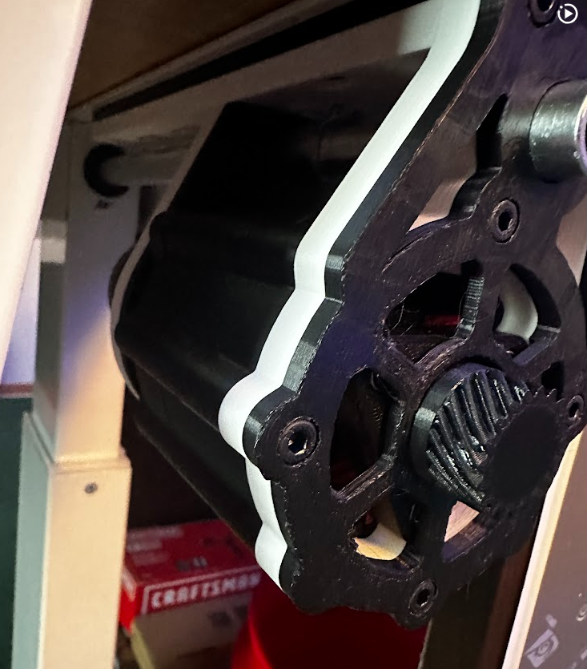
The desk started with a hand crank on the underside. Raising and lowering it became tedious once the desktop was loaded with monitors, tools, and hardware, so I measured the torque needed to move the desk through its travel.
Direct-drive motor options were either too weak or too expensive, which made a custom reduction gearbox the best engineering problem to solve.
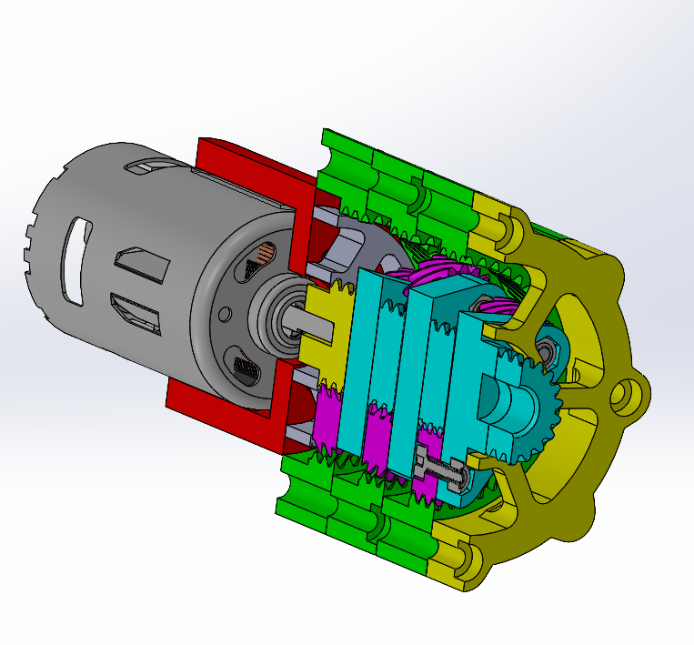
The first gearbox used a three-stage 3:1 reduction for a final 27:1 ratio. I intentionally designed the gear geometry conservatively to learn how printed tolerance stack-up behaved in a moving assembly.
It worked, but it was too large and loud. The one-piece planet carrier also created friction and eventually failed at the sun gear shaft under torsional load.
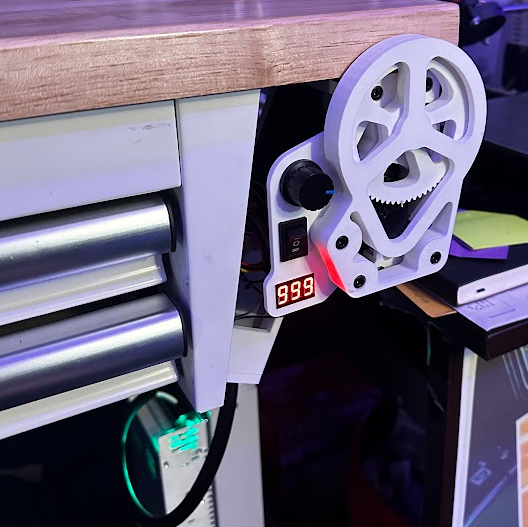
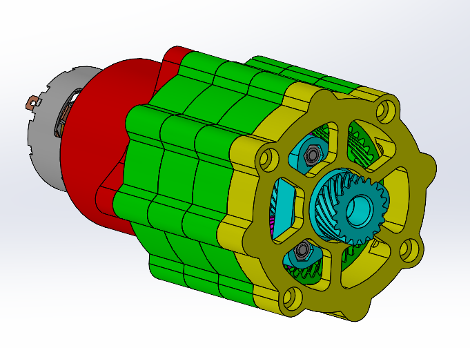
The final gearbox kept the required torque output but packaged it more tightly. The spur gears were replaced with helical teeth to reduce noise, and the planet carrier was redesigned around screws and nylock nuts as low-cost planet shafts.
The sun gear is printed into the triangular carrier, removing the weak shaft interface that failed in the first version.
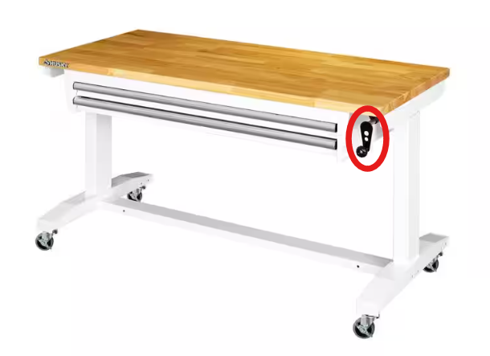
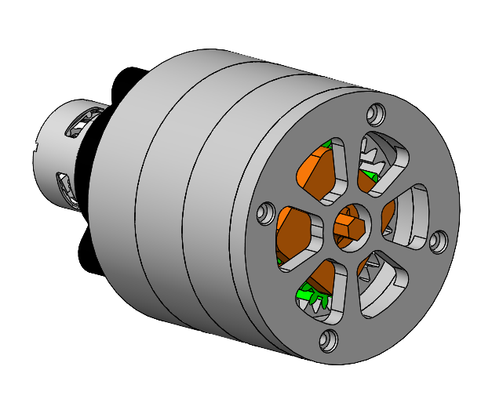
The gearbox mounts to a faceplate that also carries the user controls: potentiometer speed control, up/down direction switch, and a voltage readout for monitoring motor load.
A custom bracket mates to existing tapped holes on the underside of the desk, so the automation can be installed without drilling new holes or permanently modifying the desk.
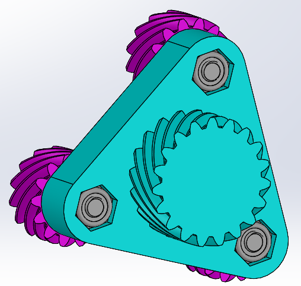